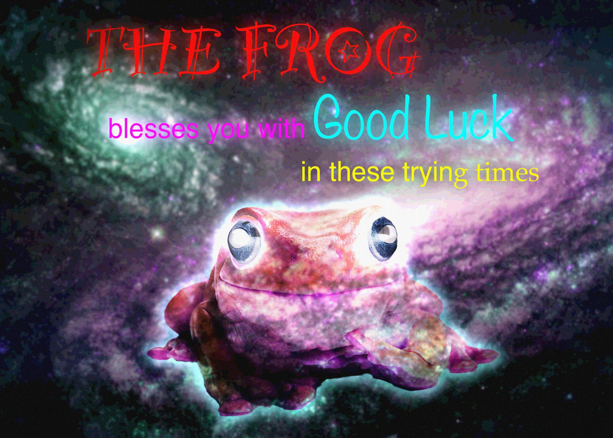

En hel sang gjemt i ett bilde
Jeg hadde laget egen kryptering før, men aldri min egen komprimering, og jeg hadde brukt flere år hektet på å gjemme data inne i bilder gjennom PSTs julekalender-CTF (NTPS). Så jeg satte de to sammen: jeg tok hele ASCII-versjonen av en viss sang fra et tidligere prosjekt, komprimerte den med en metode jeg lagde selv, og puttet hele greia inn i de laveste bitene i ett enkelt froskebilde. Dekomprimereren under er den ekte, portet til å kjøre i nettleseren din. Den leser de skjulte bitene rett ut av bildet og spiller sangen av som ASCII.
Ingenting lastes ned bortsett fra selve froskebildet. Hvert tegn over dekodes live fra de fire laveste bitene i akkurat det bildet, i sanntid.
Idéen
På det tidspunktet hadde jeg skrevet min egen kryptering for data, men jeg hadde aldri bygget en komprimeringsalgoritme, selv om det alltid så ut som et morsomt problem. Jeg var også fascinert av å gjemme data i fullt dagslys. Jeg hadde holdt på i rundt tre år med PSTs julekalender-CTF (NTPS), og det var der jeg først kom inn i det å gjemme data inne i bilder, der en nyttelast kan ligge i de delene av et bilde øyet ditt aldri legger merke til.
Jeg hadde til og med det perfekte å komprimere: ASCII-versjonen av en hel sang, hentet fra et tidligere prosjekt. Målet var å presse hele greia inn i ett bilde, og å gjøre dekomprimereren så kort som jeg overhodet kunne.
Å gjemme dataene
Hver piksel i bærebildet har fire kanaler: rød, grønn, blå og alfa. Hver kanal er én byte, og de øverste fire bitene bærer nesten hele fargen øyet ditt ser. De nederste fire bitene endrer bildet nesten ikke i det hele tatt, så det er der nyttelasten ligger. Fire kanaler ganger fire ledige bit gir seksten bit med skjult lagring per piksel, og over et bilde på flere megapiksler er det nok plass til hele sangen.
Bærebildet er med vilje et travelt bilde: en frosk, med mye som skjer i tekstur og lys. Et støyete, detaljert bilde skjuler den lille vrikkingen i de laveste bitene langt bedre enn et flatt bilde ville gjort, så dataene forblir usynlige.
Komprimeringen
Sangen består for det meste av den samme håndfullen tegn gjentatt i lange serier, så metoden er bygget rundt en liten ordbok av symboler pluss run-length-koding, pakket inn i en tett bitstrøm. Når den leses tilbake, er hvert token:
- ett flaggbit, som sier om dette tokenet gjentas,
- fem bit for symbolets indeks i ordboken,
- og, bare hvis flagget er satt, fem bit til for et gjentakelsesantall.
Så ett enkelt tegn koster seks bit, og en serie på opptil trettito like tegn koster elleve. Dekodingen går gjennom bildet piksel for piksel, skreller de seksten skjulte bitene ut av hver enkelt, fyller på en bitbuffer, og sender ut symboler til den har en full skjerm: førtiåtte rader på hundre og trettién tegn, tegnet med tjuefem bilder i sekundet. Resultatet er sangen som spilles av som ASCII-video, rett ut av frosken.
Dekomprimereren
Det jeg er mest fornøyd med er hvor kort leseren og avspilleren endte opp. Hele greia, å åpne bildet, hente ut bitene, utvide ordboktokenene og animere bildene, er fire linjer Python:
Lista A gjør trippel jobb: plass null er bildet, de neste
plassene holder ordboken av tegn, og de to siste gjenbrukes som bitbufferen
og utdatabufferen. Terminalen øverst på denne siden kjører akkurat den
algoritmen, dekodet tro mot originalen i JavaScript. Fordi dataene ligger i de
laveste bitene, må bildet leses tapsfritt, så siden dekoder PNG-en selv i
stedet for å gå via et canvas, som ville rundet av bitene og rotet til
strømmen.
Vil du fikle med det selv? Her er begge filene, bærebildet og avspilleren på fire linjer, pakket sammen:
Bærebildet
Og her er selve bildet, det som rommer hele sangen. Det ser ut som et helt vanlig bilde, for det er hele poenget.
